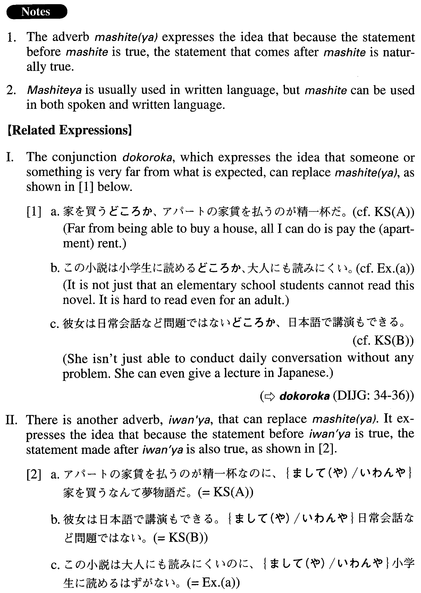

まして（や） (A. 245)
- (ksa).
- アパートの家賃を払うのが精一杯なのに、まして（や）家を買うなんて夢物語だ。
- I am just managing to pay the rent for my apartment; how much more of a dream it is to imagine buying my own house!
- (ksb).
- 彼女は日本語で講演もできる。まして（や）日常会話など問題ではない。
- She can give a speech in Japanese, to say nothing of (her ability to handle) everyday conversation.
- (a).
- この小説は大人にも読みにくいのに、まして小学生に読めるはずがない。
- This novel is hard even for adults to read much less elementary school students.
- (b).
- 彼は簡単な日本語すら話せない。ましてや、書くことなど思いもよらない。
- He cannot even speak Japanese, let alone write it.
- (c).
- 僕は自転車さえ買えない。まして、車を買うなんて不可能だ。
- I can't even buy a bike, let alone a car.
- (d).
- 国内での単身赴任でもつらい。ましてや、外国での単身赴任となるともっとつらい。
- To be sent alone to a new post within Japan is hard. It is still harder to go overseas to work without one's family.
- (e).
- この数学の問題は教授でも解けないのだから、まして、学生の僕に解けるはずがない。
- Even a professor cannot solve this math problem much less a student like me.
- (f).
- 65歳の人が毎日一キロ泳いでいるんです。まして、32歳のあなたが同じことができないわけがないですよ。
- There's a 65-year-old man who swims one kilometre every day. All the more reason why a 32-year-old like you should be able to do the same.
- (g).
- ニューヨークのような大都市でも犯罪率を下げることに成功している。ましてや、中小都市なら十分可能だろう。
- Even a big city like New York has been successful in lowering the crime rate, which is all the more reason why mid- and small-sized cities should be able to lower theirs.
- (h).
- このちっぽけな蟻だって協力し合っているんです。まして、頭脳の発達した人間にそれができないわけはないでしょう。
- These tiny ants are cooperating with each other—all the more reason why humans with our developed brains should be able to do the same.
